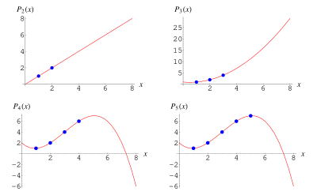

FROST
A New Type of Wallet
https://jimmysong.github.io/frost-talk
Overview
- Shamir's Secret Sharing
- FROST
- New Type of Wallet
What is Shamir's Secret Sharing?
- A way to distribute a secret where $t$ of $n$ shares are needed to reconstruct
- $t$ is called the threshold needed to recover the secret
- $n$ is the number of shares
- Having $t-1$ shares gives you no information about the secret
- Having $t$ shares allows you to recover the secret (and much more!)
How SSS Works
- Technique is using something called Polynomial Interpolation over a Finite Field
- Intuitively, this is the idea that $t$ points define a $t-1$ degree polynomial
- For example, 2 points define a line (degree-1 polynomial), 3 points define a parabola (degree-2 polynomial), etc.
Polynomials of Varying Degrees

Trusted Dealer Setup
- Dealer generates a secret $e$
- Dealer creates a degree $t-1$ polynomial with random coefficients $a_1,...,a_{t-1}$
- The dealer creates a polynomial $f(x)=e+a_1x+a_2x^2+...+a_{t-1}x^{t-1}$
- $f(0)=e$ so that's where the secret is
- Participant $i$ gets dealt $f(i)=y_i \forall{i} \in {1,2,...,n}$
- $y_i$ is the share of the secret
Key Recovery
- Participants $T$ where $|T|=t$ each generate a LaGrange Interpolation Polynomial $g_i$ over the $x$ coordinates
- The sum of the polynomials is the same as the original polynomial $\sum_{i\in T} g_i(x)=f(x)$
- The value at $0$ of each share $g_i(0)$ is combined to recover the secret $f(0)=e$
Cryptography Use
- We limit the secret and coefficients to the prime field of $N = |\mathbb{G}|$, where $\mathbb{G}$ is the group generated by $G$
- We do this so we can store a Bitcoin private key in shards.
- Thus, every participant gets dealt a share $y_i, i \in {1,2,...,N}$
- Any $t$ shares can recover the secret
- Threshold Recovery uses LaGrange Interpolation Polynomial.
- Implemented, but with the seed phrase in SLIP-39
What is FROST?
- Flexible Round-Optimized Schnorr Threshold Signatures
- Like Shamir, but instead of participants cooperating to recover the secret, they cooperate to sign a message
- There are $n$ signers/shares, but only $t$ participants required to sign.
Dealer Key Generation
- Exactly as Shamir Secret Sharing, a private polynomial $f(x)=e+a_1x+a_2x^2...a_{t-1}x^{t-1}$ where secret is $e$ and $a_i$ is random
- The $y$ values at each $x$ are distributed as shares to signers
- We create a public polynomial $F(x)$ which is $f(x)$ multiplied by $G$, $F(x)=f(x)G$ $F(x)=eG+a_1xG+a_2x^2G+...+a_{t-1}x^{t-1}G$
- Note $F(x)=P+xA_1+x^2A_2+...+x^{t-1}A_{t-1}$ where $a_iG=A_i$. Note $F(0)=P$
Participant Public/Private Keys
- $F(x)$ is a public polynomial to the signers
- Each signer once receiving the secret $y_i=f(x_i)$, verifies by checking $y_iG=F(x_i)$
- This $y_iG=F(x_i)=P_i$ is public. Everyone is aware of all signers' $x_i$ and $P_i$
Participant Signing
- Each signer can create a partial signature using their share $y_i$
- Each partial signature can be verified using the public key of the signer $P_i$
- Partial signatures can be aggregated to produce a valid signature for the private key $e$
- Keypath spend in Taproot can be a $t$-of-$n$ multisig!
Differences with MuSig2
- NOT BIP32 Compatible!
- Is $t$-of-$n$ not $n$-of-$n$
- You can change the participants (swap out a participant, change the number of signers, etc) without moving funds on-chain!
- One-round signing is possible with enough storage, vs 2 rounds for MuSig2.
- Distributed key generation is possible (no need for dealer)
FROST Wallets
- Brand new type of wallet is needed to make FROST viable (not HD wallet compatible)
- Initial ceremony for share generation and secret storing.
- Anytime a participant is added or removed, new ceremony required (but same secret kept!).
- Funds can stay in the same address even as you change participants!
- Nonce generation has to be done very carefully.
- Use double-tweaking instead of BIP32 paths for address privacy.
Benefits
- Less Onchain Footprint/Fees
- Privacy
- Flexible Controls
Drawbacks
- Software/Hardware
- Seed Backup/PSBT incompatible
- Ceremony Requirement
- Hasn't been tested
Potential Use-cases
- Organizational Bitcoin Custody
- Collaborative Bitcoin Custody
- Collaborative Nostr Accounts